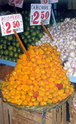

ROCOTOS C. pubescens) Flavor: Fruity, pearlike. Heat : Hot to very hot. Description: Compact plants average 2 feet with ovate, light- to dark-green, hairy leaves up to 4 inches long. Erect flowers are violet to purple, and seeds are black. Growing tips: Slow to germinate?allow up to seven weeks. Pods begin ripening. 120 to 140 days after transplanting. Plants are more cold-hardy than other species.